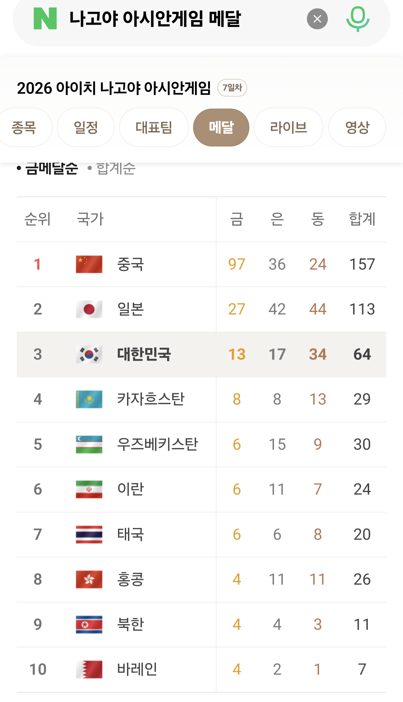

한중일 올림픽이 따로없음.아시안게임특
댓글
금메달 97개는 진짜 넘사네 ㄷㄷ
일본이랑도 차이 존나나네 2배차이 ㄷㄷ
그야 인구도 2.3배이기에..
아하 ㅋㅋㅋㅋㅋ
중국은어째서
인도랑 인니는 어째서
중국 자위딸딸이게임이네
수영이 존나웃김 볼때마다 한중일이 메달따고있음 ㅋㅋ
아니 경기가 얼마나 많길래?!
한중일이 올림픽도 탑10들어가니 뭐..
2026 아이치·나고야 아시안게임에 걸린 총금메달(세부 경기) 개수는 469개입니다.
일본에서 하는 거 아니야??
세부에서 경기하는 건 왜..
잠 깨라
중국 뭐냐?
중국은 중국이지
영어로는 차이나
중국 관리자는 최근 테러당한 중국집이름이랑 동일한 시진핑 개시부랄 탱탱부랄 새끼
중국이 메달 개수로 딸딸이 치는 건 예전에 우리도 못살 때 그랬으니 그러려니 하는데, 우리나라는 아직도 왜 저러나 싶음 세금 들여 전문 선수 키워서 메달 따고 병역 혜택까지 주면서 순위 자랑하는 게 무슨 의미인가 싶다 직장 다니면서 틈틈이 훈련해 메달 따는 사람들이 개인적으로는 더 대단하게 느껴짐 ㅇㅇ 존나게 꼬인 내 개인적인 생각임
나쁜말로좀 시작하겠음
아직 너의 생각이 거지국가 수준에 머물러 있는 거임
국제대회의 선립 취지와 진행개념 자체 이해하면 쉬움
올림픽 공식 타임키퍼(시계) 는 오메가
방송장비
통신기술
센서기술
생중계 기술
0.0001까지의 오차 잡는기술
전부 올림픽의 발전으로 선진국의 기업들이 어떻게든 공돌이 갈아가며 만든 기술들임
일본은 어떻게 따라가고 있는데
한국은 따라가지도 못했음
100년 전에는 전쟁이 기술을 발전시켰다면
국제대회로 인자강+기술을 발전시키고 있다고 보면됨
선진국일 수록 오히려 세금 더 들여서 전문 선수 키우고
지들 입맛 맞게 룰까지 변경한다
진종오가 50m 3연속 금메달 따니까 종목 자체를 없애버리고
수영이랑 육상 잘하니 100m 200m 400m 뭐 메달 갯수 계속 늘리고
대부분 스포츠 종목 연맹이 다 선진국에서 담당한다. 걔들이 바보라서 그러는거 아님.
국제대회가 인적 역량과 기술 발전의 장이라는 건 동의함. 근데 그게 내가 말한 세금 투자의 효율성이랑 무슨 상관임?
우리가 축협에 열받고 이번 야구 결과에 실망하는 것도 거지국가 수준의 생각이라서 그런 거임?
애국심이 없어서가 아니라 세금 들여 전문적으로 육성한 선수들이 직장 다니면서 훈련하는 선수들보다 성적이 저조하다면, 기존 지원 방식이 효율적인지 따져보자는 거임 ㅇㅇ
진짜 슬픈건 너가 마지막에 말한 거아
전문선수가 투잡뛰는건
제3국 특징중 하나라.
전문선수 투잡을 권장한 게 아니라, 본업 병행하면서 메달까지 딴 사람이 개인적으로 더 대단하게 느껴진다는 얘기였음 ㅇㅇ
스탄 두 나라 은근 세네ㅋㅋㅋ
중국 vs 아시아
동계아시안게임도 똑같잖아
이게 정말 한중일 올림픽일까? 중국올림픽아닐까?
아니 뭔 메달이 저래많아ㅋㅋㅋ
심지어 한국은 끼기도 애매한데?
그냥 중국혼자 하는거네ㅋㅋ 일본이 좀 선방하고ㅋㅋ
뭐 스포츠든 경제 규모든 모든면에서 아시아 탑 3아님? ㅋㅋㅋ
맞음 3국은 좋은 쪽으론 뭐든 웬만하면 아시아 톱3일듯
이야 중국은 시발ㅋㅋㅋㅋㅋㅋ
대충 인구순 느낌으로 중국 일본 한국
종목이 저렇게 많음?
사실상 셋이 놀고 나머진 들러리긴 해...
종목이 몇개야
올림픽종목을 다해야되는데
유럽이나 연영방 쪽이랑 경쟁하는게 저 3개 국가 뿐이 없으니
심지어 시범종목까지 합하면 3개국가가 90%메달 나눠가질껄.?
중국이 벌써 97개나 가져갔네